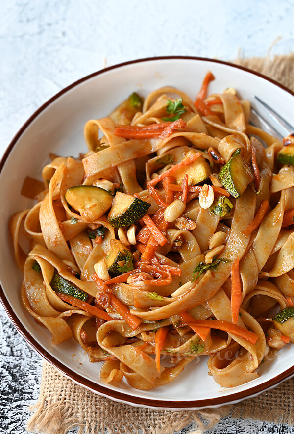

Thai Noodles

Description
A spicy Thai noodle dish with chicken and vegetables.
Ingredients
- ½ pound dried rice noodles
- 1 pound skinless, boneless chicken breast halves
- 1 dash soy sauce
- 1 green bell pepper, sliced
- 1 red bell pepper, sliced
- 1 cucumber, coarsely chopped
- 1 carrot, grated
- 10 mushrooms, halved
- 1 onion, chopped
- 2 cloves garlic, minced
- 1 tablespoon minced fresh ginger root
- 1 ½ tablespoons red chile sauce
- ¾ cup peanut sauce
- 2 tablespoons oyster sauce
- 1 tablespoon sesame oil
- 1 tablespoon sesame seeds
Steps
- Cook rice noodles according to package directions.
- Slice chicken breasts into strips. Marinate in soy sauce for about 1/2 hour.
- In a large saucepan or wok, heat sesame oil over medium heat. Cook chicken until no longer pink. Add garlic, ginger, and onions; cook until onions are tender. Add mushrooms and cucumbers; cook until mushrooms are tender. Add peppers, carrot, peanut sauce, oyster sauce, and hot chili pepper sauce. Heat through.
- Toss cooked rice noodles with saute. Garnish with sesame seeds.